Purple Kush
Short and leafy, two blocks tall. Grows wild in jungles, swamps and lush caves.
Fabric · Minecraft 1.21.11 & 1.21.1 · Public beta
(formerly GanjaCraft)
Minecraft for stoners and hemprepreneurs. Grow weed, smoke it, bake it into space cake, then build a fireproof house out of the leftovers.
Free, open source. Only needs Fabric API.
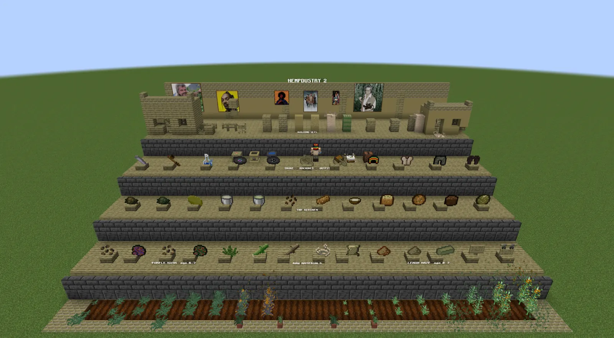
Two strains, two very different plants.
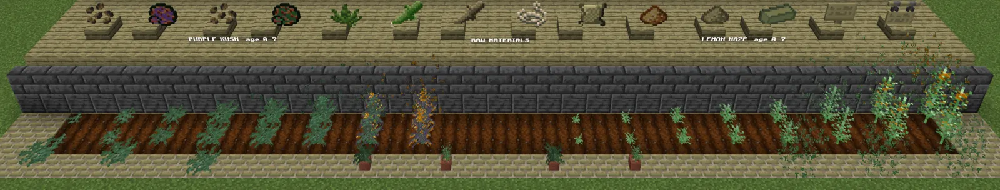
Short and leafy, two blocks tall. Grows wild in jungles, swamps and lush caves.
Three blocks tall, slower, wants headroom. Pays out in stems. Grows wild from savanna to badlands.
The device decides how long. The buds decide how hard.
Roll it, smoke it, gone.
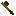
Pack it again and again. Takes enchantments, repairs on an anvil.
Bigger bowl, up to three buds. It bubbles.
More buds, stronger high, bigger downside. Buffs stop at level II like a beacon, so a third bud makes it last longer instead.
Greening out is real. Go big and you might lose the hit and spend a while nauseous instead. At three buds it also wipes every buff you had and benches you for a minute. A single bud never does that.
Real cannabutter, made the long way. Edibles are the endgame, not a day-one snack.
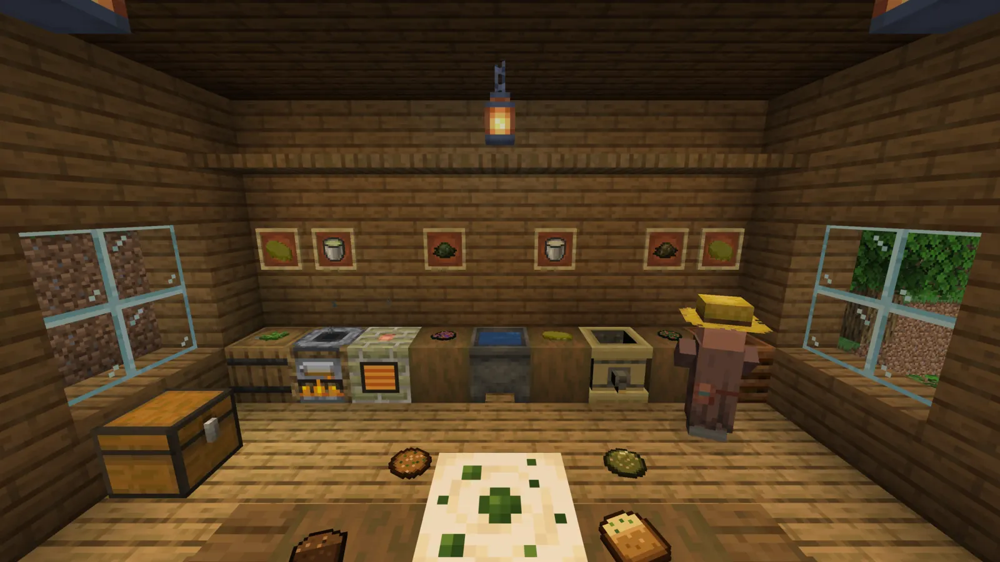
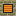
A hemp-brick oven with three trays.
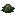
Rinse it. Optional, but it makes better butter.
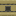
Pour in milk, light a fire under it, wait.
Strength and quality both count. Patience pays.
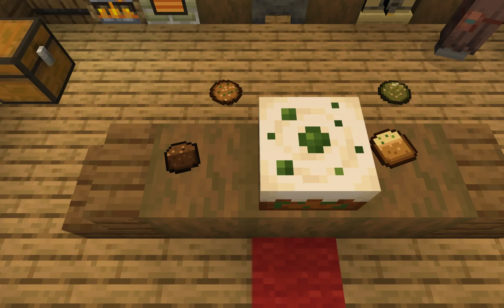
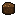
Space BrownieOne batch of butter makes eight cookies or a single dawamesk. Guess which one hits harder.
Edibles take thirty seconds to three minutes to kick in. Eating a second one because the first "isn't working" is a mistake the game will let you make.
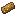
Hemp Seed BarHemp milk works anywhere cow's milk does, Infuser and cake included. You never need to find a cow.
Hemp was a fiber crop long before it was a vibe. Everything here is fireproof, like Crimson and Warped wood.
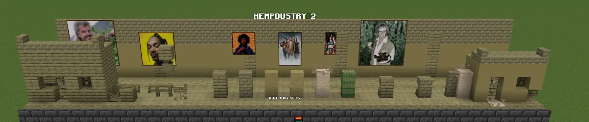
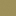
The powder sets in water, like concrete.
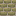
Full set of stairs, slabs and walls.
Doors, trapdoors, fences, signs, boats. The works.
Stands in for leather and wool. Beds and books without a sheep or a cow.
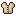
Shirt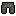
Harem pants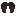
Flip-flopsThe full hemp outfit. It is not good armor. It does take trims.
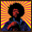
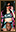
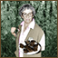
Six paintings, for the walls of your grow house.
A real tree that teaches the mod, with a few jokes hidden in it. One is named after a Paris club where Baudelaire ate dawamesk.
Original tracks by Nefuß. Creepers drop them. Listen below.
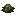
Every machine and both cauldron steps show up in your recipe viewer.
config/hempdustry.json can switch off every drug effect ("industrial hemp only"), green-outs, nausea and loot, or speed up crops and machines. /hempdustry reload applies it./reload.Twelve languages, local slang included.
Built and in testing. No release date, it's ready when it's ready.
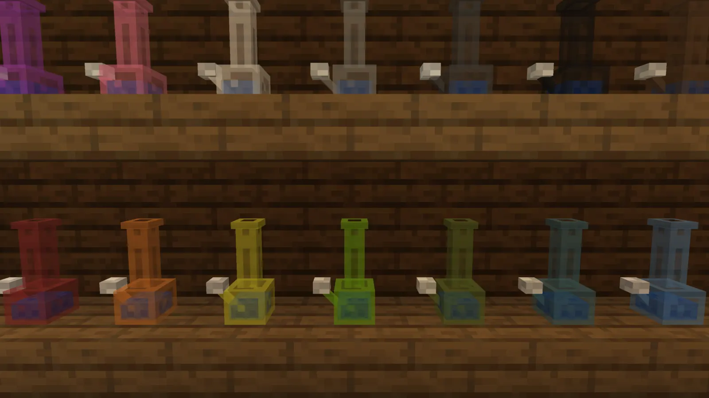
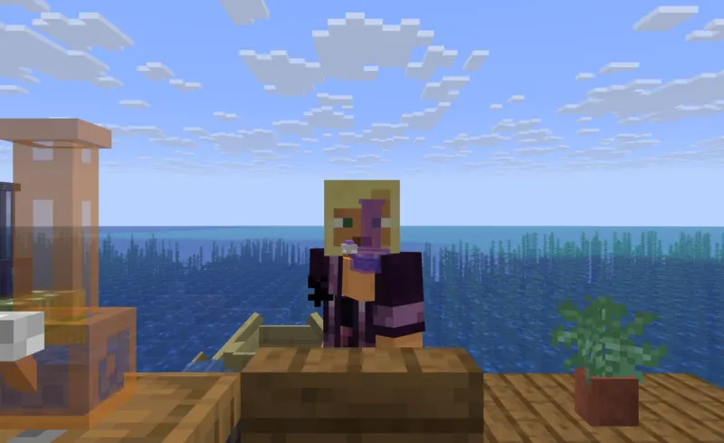
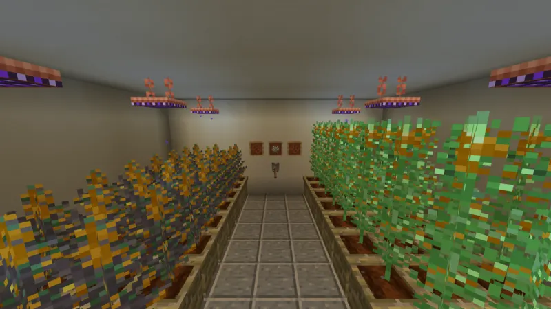
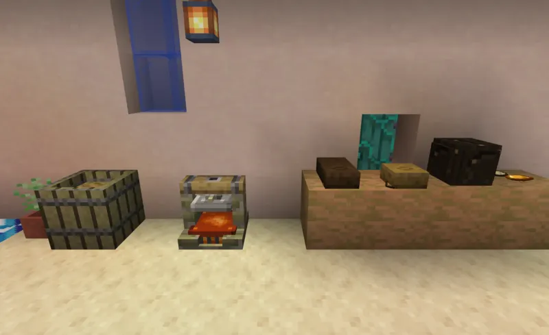
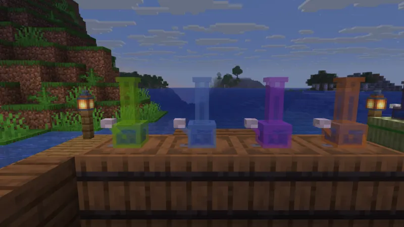
The top of the extraction bench. No BHO, not happening.
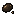
Shear a ripe plant and sometimes get hand-rubbed resin. The plant lives.
A gentle level I buzz that never greens you out.
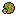
A Moroccan landrace that grows on sand by water. Smoke it and you turn invisible.
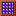
Bad light shows on the plant and turns buds into schwag. Don't smoke the schwag.
A hemp-leaf banner pattern, creepers that wander toward your fields, 42 advancements.
Code under AGPL-3.0 since day one, art and music under CC BY-NC-SA 4.0. Read it, fork it, send a pull request. Nothing is behind a paywall. CREDITS.md has the full picture.
I go by Warlon Mhite. I've been playing Minecraft since beta 1.7.4, got into modding thanks to Pipix (if memory serves), and started tinkering with game files as a kid thanks to Minecraft texture packs, long before I touched any actual code.
During the COVID pandemic, bored and admittedly a bit of a stoner myself, I noticed there wasn't a decent cannabis mod for any recent Minecraft version. MCreator made that gap easy to fill. I put together a rough but working Forge mod called GanjaCraft. It picked up a small and genuinely enthusiastic crowd.
After that, I teamed up with a school friend on Brewevolution, a beer and tavern RP mod that did a lot better than GanjaCraft ever did, partly thanks to bstylia14's video showcasing it at 4:20 (I don't think that's a coincidence). That's also where MCreator's limits started showing. Around the same time my life got busy in ways that had nothing to do with Minecraft, and both mods went quiet for a while.
Somewhere in there, NotTyzo rewrote GanjaCraft for its Reforged Network server. He picked up the cannabis-mod idea and rewrote it properly in Java, starting for 1.16 and quickly bringing it up to speed with newer versions like 1.18, all with my permission, and even worked with me on some details. Around that time the mod got banned from CurseForge for having "ganja" in the name. It thus got renamed to Hempdustry, and shortly after became Hemp-Craft, which is still maintained under various mod loaders.
In 2025 I started my own from-scratch rewrite for Fabric 1.21, mostly to relearn real Java modding, and after another long gap decided to actually finish it properly. Hempdustry 2 is that mod: the name is a small nod to the version that came after mine and didn't make it.
While Hemp-Craft and Hempdustry 2 share some mechanics and textures, the two mods are completely different projects now. Hemp-Craft is not published under a Free Software license. NotTyzo worked hard on reimplementing all my ideas without MCreator, and had my authorization to use the textures and initial CurseForge page and branding. During my rewrite of Hempdustry 2, I changed multiple things, reworking some mechanics and adding new ones to make the mod more complete and more aligned with real-world usage and science. But of course, this is still a Minecraft mod, so it's nowhere near realistic.
The Discord from the GanjaCraft days never closed. It's quiet, but it's the easiest place to report a bug, suggest a feature, or tell me the Lemon Haze grow time is too slow.
Fabric, on Minecraft 1.21.11. A 1.21.1 build is still around if your pack lives there. A NeoForge port is planned after 2.1.
Just Fabric API, on both client and server. JEI or REI are optional and get their own recipe pages. It's built to not fight with the usual kitchen-sink modpacks.
It builds, loads on a dedicated server without a warning, and its data all validates. Beta means not enough people have played it yet. Keep a backup of any world you care about, and send bug reports, that's the whole point.
Yes. Set effects.enabled to false in config/hempdustry.json and nothing gets anyone high. The farming, building and food all stay.
Same mod, new name. Platforms weren't fond of "ganja" in a listing title, so this rewrite ships as Hempdustry 2. The old GanjaCraft still exists as a historical footnote, not a separate project.
Yes, monetized packs included, as long as the launcher downloads it. Mirroring, modifying and forking are fine too, with credit, non-commercially. Only a commercial use needs to ask. CREDITS.md has the details.